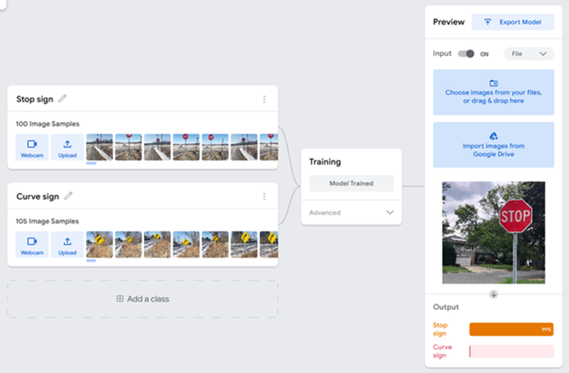

سرگرمی:
گھر میں تیار بیکنگ سوڈا راکٹ لانچ کرنا
خلاصہ:
تعارف:
کیا آپ نے کبھی کسی چیز کو ہوا میں اٹھاتے ہوئے دیکھ کر لطف اٹھایا ہے، جیسے شو میں آتش بازی یا خلائی جہاز لانچ کرتے ہوئے؟ یہ ایک حیرت انگیز تجربہ ہوسکتا ہے۔ زمین کی کشش ثقل کے خلاف کسی چیز کو اٹھاتے دیکھنا سنسنی خیز ہے۔ خلائی جہاز کو لانچ کرنے کے لیے، اس کے راکٹ اسے ایک زوردار دھکا دیتے ہیں جو کیمیائی رد عمل کی وجہ سے ہوتا ہے۔ اس کا مطلب یہ ہے کہ جب بھی آپ خلائی جہاز کو لانچ کرتے ہوئے دیکھتے ہیں، آپ کام پر کیمسٹری دیکھ رہے ہوتے ہیں۔ اس سرگرمی میں آپ کو دو آسان اجزاء یعنی بیکنگ سوڈا اور سرکہ کا استعمال کرتے ہوئے کسی چیز کو ہوا میں اڑا دینا پڑے گا۔ بہترین لفٹ آف حاصل کرنے کے لیے ان اجزاء کو کس طرح ملایا جائے اس کی چھان بین کریں، اور پھر آپ اپنے دوستوں اور خاندان کو گھریلو، کشش ثقل سے بچنے والا شو دے سکتے ہیں!
مواد:
- ایک ڈھکن اور سخت مہر کے ساتھ پلاسٹک فلم کا کنستر۔ یہ کنستر ایمیزون جیسے آن لائن دکانداروں سے دستیاب ہیں۔
- بیکنگ سوڈا
- ماپنے کے چمچ
- مومی کاغذ یا پیالہ
- چمچ
- پانی
- سرکہ
- عمارتوں سے کم از کم دو میٹر کے فاصلے پر کھلا بیرونی علاقہ۔ یہ ایک سخت، ہموار سطح کا ہونا مثالی ہے، جیسے ایک پکی آنگن یا ڈرائیو وے۔
- حفاظتی عینک
- چیتھڑا یا کاغذ کا تولیہ
- اختیاری: تعمیراتی کاغذ، شفاف ٹیپ، اسٹیکرز، اور قینچی
تیاری کا کام:
اس سرگرمی میں جب آپ اپنا فلم کنسٹر راکٹ لانچ کرتے ہیں، تو آنکھوں کی حفاظت ضرور کریں! راکٹ واقعی بہت زیادہ طاقت کے ساتھ اڑتے ہیں اور لوگوں یا ٹوٹنے والی چیزوں کی طرف اشارہ نہیں کیا جانا چاہئے۔
طریقہ کار
- اگر آپ چاہیں تو، آپ اپنے فلمی کنستر راکٹ کو سجا سکتے ہیں۔ آپ فلم کے کنستر کے ارد گرد تعمیراتی کاغذ کا ایک ٹکڑا لپیٹ سکتے ہیں اور کاغذ کو کاٹ سکتے ہیں تاکہ یہ صرف کنستر کے اطراف کا احاطہ کرے (لیکن اطراف کے اوپر یا نیچے نہیں جاتا ہے)۔ کاغذ کو کنستر پر یکساں طور پر لپیٹنے کے بعد، اسے کچھ ٹیپ سے محفوظ کریں۔ آپ اضافی فلیٹ سجاوٹ شامل کر سکتے ہیں، جیسے اسٹیکرز یا ڈرائنگ۔ اس بات کو یقینی بنائیں کہ ڈھکن لگانا اب بھی آسان ہے۔
- مومی کاغذ یا پیالے پر بیکنگ سوڈا کا 1 چائے کا چمچ (tsp.) رکھیں۔ 1/8 چائے کا چمچ شامل کریں۔ بیکنگ سوڈا میں پانی ڈال کر اچھی طرح مکس کر لیں۔ (اگر آپ کے پاس 1/8 عدد ماپنے کا چمچ نہیں ہے تو، ایک ¼ عدد ماپنے والا چمچ تقریباً آدھا بھرا ہوا بھریں۔) اگر آپ مومی کاغذ استعمال کر رہے ہیں، تو آپ احتیاط سے نم بیکنگ سوڈا کو اپنے اوپر تہہ کرنے کے لیے مومی کاغذ کا استعمال کر سکتے ہیں۔ پانی میں ملائیں.
- فلم کینسٹر کے ڈھکن کو الٹا کریں اور نم بیکنگ سوڈا کے ساتھ ڈپریشن کے اندر پیک کریں۔ (بیکنگ سوڈا نہ ڈالیں جہاں کنستر ڈھکن پر پھنس جائے۔) اسے مضبوطی سے پیک کریں۔ ایک لمحے کے لیے دوبارہ ڑککن کو دائیں طرف مڑیں۔ کیا نم بیکنگ سوڈا اپنی جگہ پر رہتا ہے؟ اگر یہ رہتا ہے تو، اگلے مرحلے میں، سرکہ کی تیاری پر جائیں. اگر بیکنگ سوڈا گر جائے تو بیکنگ سوڈا میں تھوڑا سا مزید پانی ڈالیں اور اس میں مکس کریں لیکن کوشش کریں کہ ضرورت کے مطابق تھوڑا سا پانی ڈالیں۔ بیکنگ سوڈا کو ڈھکن میں زیادہ دیر تک رہنے کی ضرورت نہیں ہوگی۔

- 1 چمچ شامل کریں۔ ایک وقت میں کنستر میں سرکہ، اسے تقریباً اوپر تک بھرنا۔ آپ کو ڈبے میں زیادہ سے زیادہ سرکہ ڈالنے کی ضرورت ہے بغیر سرکہ اور بیکنگ سوڈا کے رابطے میں آنے کے بعد جب آپ بعد میں کنستر پر ڈھکن توڑتے ہیں۔ عین کنستر پر منحصر ہے، یہ تقریباً 5 عدد ہو سکتا ہے۔ سرکہ کی. آپ نے کتنا سرکہ استعمال کیا؟
- عمارتوں سے کم از کم چھ فٹ کے باہر کسی کھلے علاقے میں جائیں۔
- اپنے حفاظتی چشمے پہنیں۔ کسی چپٹی، سخت جگہ پر زمین کے قریب جھک جائیں اور اسے سیل کرنے کے لیے جلدی سے کنستر پر ڈھکن کو کھینچیں۔ فوری طور پر کنستر کو الٹ دیں، تاکہ ڈھکن زمین پر ہو، اور جلدی سے ہٹ جائیں۔ کیمیائی رد عمل ہونے کا انتظار کریں۔
یہ ہونے میں کتنا وقت لگتا ہے؟ جب ڈھکن کھل جائے تو راکٹ کو لانچ کرنا چاہیے - کنستر کتنی اونچائی پر جاتا ہے؟
- ٹپ: اگر راکٹ لانچ نہیں ہوتا، تو ہو سکتا ہے کہ ڈھکن کو کافی مضبوطی سے بند نہ کیا گیا ہو۔ (اگر ایسا ہوتا ہے تو آپ آسانی سے ڈبے سے بہت سے بلبلے نکلتے ہوئے دیکھ سکتے ہیں۔) ہو سکتا ہے راکٹ کسی اور ظاہری وجوہ کی وجہ سے ٹھیک نہ ہوا ہو (جیسے کہ ڈھکن کو کافی تیزی سے سیل نہ کرنا)۔ اگر یہ صحیح طریقے سے لانچ نہیں ہوا تو، کنسٹر راکٹ کو دوبارہ تیار کرنے اور لانچ کرنے کی کوشش کریں۔ راکٹ لانچ کرنے کی عادت ڈالنے کے لیے آپ کو تھوڑی مشق کی ضرورت پڑ سکتی ہے۔
- احتیاط سے ڈھکن اور کنستر کو پانی سے دھولیں اور پھر انہیں خشک کریں۔ اگر آپ کا کنستر تعمیراتی کاغذ سے ڈھکا ہوا ہے، تو یقینی بنائیں کہ یہ زیادہ گیلا نہ ہو۔
- بیکنگ سوڈا اور سرکہ کو پہلے کی طرح نم کریں لیکن اس بار سرکہ کی اصل مقدار سے آدھے سے کچھ زیادہ استعمال کریں۔ مثال کے طور پر، اگر آپ 5 چمچ استعمال کرتے ہیں. سرکہ کے، اس وقت استعمال کریں 3 چمچ. (اب بھی بیکنگ سوڈا کا 1 چمچ استعمال کریں۔)
- ایک بار پھر، اپنے حفاظتی چشمے لگائیں اور اپنا نیا تیار کردہ کنسٹر راکٹ لانچ کریں۔
کیا اس میں پہلے راکٹ کو لانچ کرنے میں زیادہ، کم، یا اتنا ہی وقت لگتا ہے؟ کیا یہ زیادہ، چھوٹا، یا اسی فاصلے پر جاتا ہے؟
- آخر میں ڈھکن اور کنستر کو پانی سے دھولیں، انہیں خشک کریں اور پہلے کی طرح تیار کریں لیکن اس بار 1 چمچ استعمال کریں۔ سرکہ (یا تقریباً 1/5 سرکہ کی اصل مقدار جو آپ استعمال کرتے ہیں)۔ اپنی حفاظتی چشمیں لگائیں اور کنسٹر راکٹ لانچ کریں۔ دیگر دو لانچوں کے مقابلے لانچ ہونے میں کتنا وقت لگتا ہے؟ پچھلے دو بار کے مقابلے میں کنستر کتنا اونچا جاتا ہے؟
- اگر آپ کو اپنے کسی بھی نتائج کے بارے میں یقین نہیں ہے، تو آپ انہیں دہرانے کی کوشش کر سکتے ہیں (بیکنگ سوڈا اور سرکہ کی ایک ہی مقدار کا استعمال کرتے ہوئے)۔
سرکہ کی کتنی مقدار سب سے زیادہ لانچ کی اونچائی کا باعث بنی؟ آپ کو ایسا کیوں لگتا ہے؟
سرگرمی:
انڈے کے خول کتنے مضبوط ہوتے ہیں؟

خلاصہ:
تعارف:
کیا آپ نے کبھی کسی عمارت میں محراب کا ڈھانچہ دیکھا ہے، جیسے دروازے کے اوپر یا بڑی کھڑکیوں کے ارد گرد؟ محراب قدیم زمانے سے ساختی انجینئرنگ میں استعمال ہوتی رہی ہیں۔ اس سرگرمی میں آپ قدرتی طور پر موجود محراب کی شکل کی مضبوطی کی جانچ کریں گے: انڈے کا خول۔ تو کچھ انڈوں کو پکڑیں اور درج ذیل سوال کا جواب دینے کی کوشش میں انہیں انجینئرنگ کے اچھے استعمال میں ڈالیں: ایک انڈے کا شیل کتنے بڑے پیمانے پر سہارا دے سکتا ہے؟
مواد:
- کچے انڈے (کم از کم 3)
- ایک پیالا
- رات کے کھانے کی پلیٹ یا دیگر بڑی، چپٹی سطح پر جانچ کے لیے انڈے کے چھلکے رکھنے کے لیے
- پنسل یا مارکر
- اختیاری: حکمران
- ایک روٹری ٹول، جسے کبھی کبھی ڈرمیل کہا جاتا ہے، Amazon.com کی طرح۔ متبادل طور پر ایک چھوٹی مثلث فائل کا استعمال کرنا ممکن ہے، لیکن زیادہ مشکل ہے۔
- حفاظتی چشمے، روٹری ٹول استعمال کرتے وقت آپ کی آنکھوں کو انڈے کے خول کے ٹکڑوں سے بچانے کے لیے
- ہارڈ کور کتاب
- کئی میگزین یا ہلکے وزن والی کتابیں۔
طریقہ کار:
- انڈوں میں سے ایک کے گرد ایک لکیر بنانے کے لیے پنسل یا مارکر کا استعمال کریں، انڈے کو اس کے دو نوکدار سروں کے درمیان آدھے راستے پر تقسیم کریں۔ یہ لکیر تقریباً انڈوں کے چوڑے نقطہ پر ہونی چاہیے (چوڑائی کے لحاظ سے، لمبائی کے لحاظ سے نہیں)۔ جب آپ لائن بناتے ہیں تو آپ آدھے راستے کے نقطہ کا تعین کرنے میں مدد کرنے کے لیے ایک حکمران کا استعمال کر سکتے ہیں۔
- نوکیلے سرے پر انڈے کے خول کو احتیاط سے توڑ دیں۔ ایک چھوٹا سا سوراخ کریں اور انڈے کے مواد کو ایک پیالے میں نکال دیں۔ انڈوں کے خالی خول کو کچھ پانی سے دھولیں۔ انڈوں کو سنبھالتے وقت اپنے ہاتھوں کو احتیاط سے دھونا یاد رکھیں، بشمول چھلکے، کیونکہ کچے انڈے سالمونیلا لے سکتے ہیں۔ سالمونیلا فوڈ پوائزننگ کی ایک بڑی وجہ ہے۔
- ایک تکونی فائل، یا کٹ آف ڈسک کے ساتھ روٹری موٹر ٹول کا استعمال کریں، اپنی نشان زد لائن پر انڈے کے شیل کو چاروں طرف سے اسکور کریں۔ اگر آپ کٹ آف ڈسک کے ساتھ روٹری ٹول استعمال کر رہے ہیں، تو کسی بالغ کے ساتھ کام کریں اور حفاظتی چشمے پہنیں۔ آپ ڈسٹ ماسک بھی پہننا چاہیں گے۔ کٹ آف ڈسک کے صرف کنارے کا استعمال کرتے ہوئے آہستہ آہستہ کام کریں۔
- احتیاط سے انڈے کے شیل کو توڑیں یا کاٹ کر واپس اپنی بنائی ہوئی اسکور لائن پر کریں۔ آہستہ آہستہ شیل کے چھوٹے چھوٹے ٹکڑوں کو توڑ دیں، ایک ایک کرکے، اپنے راستے پر کام کریں۔
انڈے کا شیل آپ کو سنبھالتے ہی کتنا مشکل محسوس ہوتا ہے؟
- اس عمل کو مزید دو بار دہرائیں تاکہ آپ کل تین انڈے کے خول تیار کر لیں۔
- اگر انڈوں کے چھلکوں کے کناروں کو تھوڑا سا گھناؤنا ہو تو یہ ٹھیک ہے، لیکن اگر کسی بھی تیار شدہ انڈے کے چھلکے میں بڑی چپس یا بالوں کی لکیر میں دراڑیں پڑ جاتی ہیں، تو آپ تازہ انڈے کے ساتھ شروعات کرنا چاہیں گے۔ آپ کے تیار کردہ انڈے کے خول کو کمزور کرنے والی کوئی دراڑ یا بڑی چپس نہیں ہونی چاہیے۔
- تین تیار شدہ انڈے کے چھلکے ایک چپٹی سطح پر رکھیں، جیسے کہ کھانے کی پلیٹ، ان کا کھلا سرا نیچے کی طرف ہو۔ انہیں سطح پر یکساں طور پر الگ کریں تاکہ وہ ایک مساوی مثلث بنائیں۔
آپ کو کیوں لگتا ہے کہ ان میں برابر جگہ رکھنا ضروری ہے؟
- تین تیار شدہ انڈے کے خولوں کے اوپر ایک ہارڈ کوور کتاب احتیاط سے بچھائیں۔ کتاب کو انڈوں کے چھلکوں کے اوپر مرکز میں رکھا جانا چاہیے تاکہ بڑے پیمانے پر ان کے درمیان یکساں طور پر تقسیم ہو جائے۔ کیا انڈے کے چھلکے کتاب کے وزن کو سہارا دیتے ہیں؟
- ایک وقت میں ایک میگزین کو احتیاط سے شامل کریں (کتاب کے اوپر مرکز میں) یہ دیکھنے کے لیے کہ انڈے کے چھلکے کتنے بڑے پیمانے پر مدد کر سکتے ہیں۔
انڈے کے چھلکے پھٹنے اور ٹوٹنے سے پہلے آپ کتنے رسالے شامل کر سکتے ہیں؟ کیا انڈے کے چھلکے کے ذریعے سپورٹ کیا جانے والا حتمی بوجھ آپ کے خیال سے زیادہ بھاری یا ہلکا ہے؟
سرگرمی:
ایک کمپیوٹر کو سڑک کے نشانات کو پہچاننا سکھائیں۔
خلاصہ:
- فعال وقت
1 دن تک
- کل پروجیکٹ کا وقت
1 دن تک
- بنیادی خیال
مشین لرننگ
تعارف:
بغیر ڈرائیور والی کاریں سڑک کے مختلف نشانات کو کیسے پہچانتی ہیں؟ وہ مشین لرننگ نام کی کوئی چیز استعمال کرتے ہیں۔ اس سرگرمی میں آپ کمپیوٹر کو مختلف سڑکوں کی نشانیوں کو پہچاننا سکھائیں گے جو آپ خود لیتے ہیں اور ایک ٹول جسے Teachable Machine by Google® کہتے ہیں۔ تربیت کا ڈیٹا جتنا بہتر ہوگا، پروگرام اتنی ہی درست طریقے سے مختلف قسم کی علامات کو پہچان سکے گا۔
مواد:
- اسمارٹ فون یا ڈیجیٹل کیمرہ
- ان مقامات تک رسائی جہاں آپ سڑک کے نشانات کی تصاویر محفوظ طریقے سے لے سکتے ہیں۔
- انٹرنیٹ تک رسائی والا کمپیوٹر
تیاری کا کام:
- آپ جو کمپیوٹر پروگرام استعمال کریں گے اسے مشین لرننگ ماڈل کہا جاتا ہے۔ اس سے پہلے کہ آپ اس پروگرام کو سڑک کے نشانات کو پہچاننا سکھا سکیں، آپ کو علامات کی بہت سی تصاویر لینے کی ضرورت ہے۔ یہ تصاویر آپ کی تربیت کا ڈیٹا ہیں۔ آپ ان کا استعمال ماڈل کو نشانیوں کو پہچاننے کی تربیت کے لیے کریں گے۔
- سڑک کے نشانات کی کم از کم دو مختلف اقسام کا انتخاب کریں۔ ہر قسم کے نشان کی کم از کم چند درجن تصاویر لیں۔ اگر آپ چاہیں تو سینکڑوں تصاویر بھی لے سکتے ہیں۔ آپ جتنی زیادہ تصاویر لیں گے، اتنا ہی زیادہ ڈیٹا آپ کے پاس اپنے ماڈل کو تربیت دینے کے لیے دستیاب ہوگا۔
- مثالی طور پر، آپ کو مختلف زاویوں سے، مختلف مقامات پر اور مختلف پس منظر کے ساتھ نشانات کی تصویریں لینا چاہیے۔ مثال کے طور پر، دیکھیں کہ کس طرح تصویر کے پس منظر میں ایک صاف نیلا آسمان ہے۔ اگر آپ صرف نیلے آسمان کے خلاف نشانات کی تصویریں لیتے ہیں، تو آپ کے ماڈل کو دیگر پس منظر والی تصویروں میں نشانات کو پہچاننے میں دشواری ہو سکتی ہے، جیسے کہ عمارتیں یا درخت۔
- اپنی تمام تصاویر لینے کے بعد، انہیں اپنے کمپیوٹر پر لوڈ کریں اور انہیں فولڈرز میں ترتیب دیں، ہر قسم کے نشان کے لیے ایک کے ساتھ۔
طریقہ کار:
نوٹ: ویب سائٹس اکثر بدل سکتی ہیں۔ اگر یہاں دی گئی ہدایات بالکل اسی طرح سے نہیں ملتی ہیں جو آپ Teachable Machine ویب سائٹ پر دیکھتے ہیں، تو ویب سائٹ پر اسکرین پر دی گئی ہدایات پر عمل کریں۔ عام عمل اسی طرح ہونا چاہئے.
- ٹیچ ایبل مشین پر جائیں اور شروع کریں پر کلک کریں۔
- تصویری پروجیکٹ پر کلک کریں۔
- معیاری تصویری ماڈل پر کلک کریں۔
- ماڈل میں دو کلاسوں کے ناموں میں ترمیم کریں۔ مثال کے طور پر، آپ انہیں "اسٹاپ سائن" اور "کرو سائن" کا نام دے سکتے ہیں۔
- اپنی پہلی کلاس ک ے لیے، تصویری نمونے شامل کریں کے تحت، اپنے کمپیوٹر سے اس قسم کے نشان کی تصویریں اپ لوڈ کریں۔ اگر آپ کے پاس بہت ساری تصاویر ہیں تو اسے اپ لوڈ کرنے میں کچھ وقت لگ سکتا ہے۔
- اپنی دوسری کلاس کے لیے تصاویر شامل کرنے کے لیے مرحلہ 5 کو دہرائیں۔
- ٹرین ماڈل پر کلک کریں۔ ماڈل کے تربیت مکمل ہونے کا انتظار کریں۔
- پیش نظارہ کے تحت، ڈراپ ڈاؤن مینو میں انتخاب کو ویب کیم سے فائل میں تبدیل کریں۔
- پیش نظارہ کے تحت، سڑک کے نشان کی اپنی ایک تصویر اپ لوڈ کریں۔
آؤٹ پٹ سیکشن کو دیکھیں۔ کیا آپ کا ماڈل تصویر کی صحیح درجہ بندی کرتا ہے؟

- اب اپنے ماڈل کو ٹیسٹ میں ڈالیں۔ یہ اچھی طرح سے کام کرے گا اگر آپ صرف ان تصاویر کو دوبارہ استعمال کرتے ہیں جو آپ نے پہلے ہی تربیتی ڈیٹا میں استعمال کی ہیں۔ اگر آپ ایسی نئی تصاویر آزماتے ہیں جو آپ کے ماڈل نے پہلے کبھی نہیں دیکھی ہوں تو کیا ہوگا؟ آپ مزید تصاویر لے سکتے ہیں یا سڑک کے نشانات کی تصویریں آن لائن تلاش کر سکتے ہیں اور ان کا استعمال کر سکتے ہیں۔
آپ کا ماڈل نئی تصاویر کے ساتھ کتنا اچھا کام کرتا ہے؟ کیا ہوگا اگر آپ مختلف پس منظر والی تصاویر، مختلف موسم میں یا دن کے مختلف اوقات میں آزمائیں؟
- اپنے ماڈل کو مزید تربیتی ڈیٹا دے کر اسے بہتر بنانے کی کوشش کریں۔ مثال کے طور پر، ہو سکتا ہے کہ آپ کا ماڈل دھوپ کے دنوں میں نشانیوں کی نشاندہی کرنے کے لیے اچھی طرح کام کرتا ہے لیکن ابر آلود، بارش یا برفانی دنوں میں لی گئی تصویروں کے لیے اچھا کام نہیں کرتا ہے۔ اس صورت میں، مختلف موسمی حالات میں لی گئی تصاویر کو تلاش کرنے کی کوشش کریں۔ انہیں اپ لوڈ کریں اور اپنے ماڈل کو دوبارہ تربیت دیں۔ کیا یہ آپ کے ماڈل کی کارکردگی کو بہتر بناتا ہے؟
سرگرمی:
مٹی سائنس: ونوگراڈسکی کالموں میں مائکروجنزموں کا مطالعہ کریں۔
خلاصہ:
تعارف:
ہمارا سیارہ اس پر موجود ہر چیز کو ری سائیکل اور دوبارہ استعمال کرتا ہے جو زندگی کو سہارا دینے کے لیے درکار ہے۔ یہ ایک حیرت انگیز، دیوہیکل ری سائیکلنگ سسٹم ہے جسے بائیو کیمیکل سائیکل کہا جاتا ہے۔ آپ دراصل اسے چھوٹے پیمانے پر پلاسٹک کی بوتل اور کیچڑ کا استعمال کرکے اس کا نمونہ بنا سکتے ہیں جس کو ونوگراڈسکی کالم کہا جاتا ہے۔ اس سرگرمی میں، آپ اپنے ونوگراڈسکی کالم بنائیں گے اور اس بات کی تحقیق کریں گے کہ مختلف غذائی اجزاء کو شامل کرنے سے مٹی میں کون سے مائکروجنزم پنپتے ہیں اور کون سے ناکام ہوجاتے ہیں۔
مواد:
- پلاسٹک کی چار صاف پانی کی بوتلیں، ہر ایک 500 ملی لیٹر۔ وہ بوتلیں جن کے اطراف ہموار ہوتے ہیں (کوئی چوٹیاں نہیں ہوتیں) اور شکل میں لمبی اور تنگ ہوتی ہیں بہترین کام کرتی ہیں۔
- قینچی
- چاقو (اختیاری)
- مستقل مارکر
- حکمران
- ربڑ کے جوتے اور پرانے کپڑے جو کیچڑ لگ سکتے ہیں (اختیاری)
- کیچڑ والی ندی، تالاب، جھیل، یا دلدل تک رسائی
- دستانے
- بیلچہ یا ٹرول
- دو بالٹیاں
- اخبار (1/4 شیٹ) یا سادہ کاغذ کی مساوی مقدار کو چھوٹے مستطیلوں میں کاٹ دیا جاتا ہے۔
- ایک انڈے کی زردی
- دو بڑے مکسنگ پیالے۔
- ماپنے کا کپ
- بوتلوں میں کیچڑ بھرنے کے لیے چوڑی چھڑی
- چائے کا چمچ ماپنا
- 13 واٹ کے کمپیکٹ فلوروسینٹ بلب کے ساتھ ایڈجسٹ ڈیسک لیمپ (اختیاری)
- ایک خالی سطح، جیسے میز یا میز پر، جو کمرے کے گرم درجہ حرارت پر (تقریباً 72 سے 78 ڈگری فارن ہائیٹ)۔ اسے براہ راست سورج کی روشنی نہیں ملنی چاہیے، لیکن اگر آپ ڈیسک لیمپ استعمال نہیں کر رہے ہیں، تو یہ علاقہ بہت دھوپ والی کھڑکی کے قریب ہونا چاہیے۔
- پلاسٹک کی لپیٹ
- پلاسٹک کے کوڑے دان کے تھیلے یا گروسری کے تھیلے
- چار ربڑ بینڈ
- گتے کا ڈبہ یا براؤن پیپر بیگ
- ٹارچ
تیاری کا کام:
- نوٹ: اس پروجیکٹ میں آپ کو اپنے ہاتھوں پر کچھ کچا انڈا یا مٹی مل سکتی ہے۔ ان مواد کو سنبھالنے کے بعد اپنے ہاتھوں کو اچھی طرح دھونا یاد رکھیں۔ اپنے کام کے علاقے اور آلات کو بھی صاف کریں۔
- پانی کی چار بوتلوں میں سے کسی بھی ریپر کو جتنا بہتر ہو سکے ہٹا دیں۔
- احتیاط سے اپنی بوتلوں کے اوپر کاٹ دیں جہاں بوتل اوپر کے قریب اندر کی طرف مڑنے لگے۔ کٹ آف ٹاپس کو بعد میں فنل کے طور پر استعمال کرنے کے لیے محفوظ کریں۔ ایسا کرنے کے لیے آپ کو قینچی اور چاقو استعمال کرنے کی ضرورت پڑ سکتی ہے، اور کسی بالغ کو مدد کرنے کی ضرورت پڑ سکتی ہے۔
- مستقل مارکر کا استعمال کرتے ہوئے، ایک چھوٹا سا نشان بنائیں جہاں آپ کی بوتل تقریباً 85% بھری ہو گی۔ مثال کے طور پر، اگر آپ کی بوتل چھ انچ لمبی ہے، تو آپ نیچے سے تقریباً پانچ انچ اوپر ایک نشان بنائیں گے۔ آپ بوتلوں کو اس سطح تک مٹی سے بھر دیں گے۔
- ہر بوتل پر لیبل لگائیں کہ مٹی میں کیا شامل کیا جائے گا۔ ایک میں کٹے ہوئے کاغذ شامل کیے جائیں گے، ایک میں انڈے کی زردی شامل ہو گی، اور دو میں صرف سادہ مٹی ہو گی۔ سادہ بوتلوں میں سے ایک کو اندھیرے میں رکھا جائے گا، جبکہ باقی تین بوتلوں کو روشنی میں رکھا جائے گا۔
- جا کر کیچڑ والے ندی، تالاب، جھیل یا دلدل سے کیچڑ اور پانی جمع کریں۔ بالغوں کی نگرانی کو یقینی بنائیں اور پانی کے ارد گرد احتیاط برتیں۔ آپ پہلے ربڑ کے کچھ جوتے اور کپڑے بھی پہننا چاہیں گے جو کیچڑ سے بھر سکتے ہیں۔ دستانے پہنیں اور ایک بالٹی کو تقریباً ڈیڑھ سے ایک گیلن کیچڑ سے بھریں، اسے زیادہ تر پانی کی سطح کے بالکل نیچے سے کھینچیں۔ دوسری بالٹی میں، اسی جگہ سے آدھا گیلن پانی جمع کریں۔
- اپنی بالٹیاں گھر لائیں اور انہیں سایہ یا ٹھنڈی جگہ پر رکھیں جب تک کہ آپ انہیں استعمال نہ کریں۔ اگر ضرورت ہو تو جاو دھو لو!
طریقہ کار:
- ایک مکسنگ پیالے میں ایک چائے کا چمچ (کمپیکٹڈ) کٹے ہوئے کاغذ شامل کریں۔ یہ مٹی میں موجود جرثوموں کے لیے کاربن کا ذریعہ ہوگا۔
آپ کے خیال میں کاربن کا اضافہ ان جرثوموں کو کیسے متاثر کرے گا جو ونو گراڈسکی کالم میں اگتے ہیں؟
- دوسرے پیالے میں ایک تہائی انڈے کی زردی (کچی یا سخت ابلی ہوئی) ڈالیں۔ اگر یہ سخت ابلا ہوا ہو تو زردی کو میش کریں۔ اگر یہ کچا ہے تو اسے سنبھالنے کے بعد اپنے ہاتھ ضرور دھوئیں، کیونکہ کچے انڈوں میں سالمونیلا بیکٹیریا ہو سکتا ہے۔ زردی مٹی میں موجود جرثوموں کے لیے سلفر کا ذریعہ ہوگی۔
آپ کے خیال میں گندھک کو شامل کرنے سے ان جرثوموں پر کیا اثر پڑے گا جو ونوگراڈسکی کالم میں بڑھتے ہیں؟
- دستانے پہنیں اور اپنی بالٹیاں مٹی اور پانی سے لیں۔ ہلاتے وقت، آپ نے جو پانی جمع کیا ہے اسے کیچڑ میں آہستہ آہستہ شامل کریں جب تک کہ آپ کے مرکب میں ملک شیک کی مطابقت نہ آجائے۔ ہلاتے وقت، مٹی سے تمام لاٹھی، پتے اور چٹانیں ضرور نکال لیں۔
- دو بڑے مکسنگ پیالے لیں، ایک کٹے ہوئے کاغذ کے ساتھ اور ایک انڈے کی زردی کے ساتھ، اور ہر ایک میں دو کپ مٹی ڈالیں۔ اچھی طرح مکس کریں۔
- کٹ آف بوتل کے اوپر کو چمنی کے طور پر استعمال کرتے ہوئے، کاغذ کے ساتھ ملا ہوا تقریباً ایک انچ کیچڑ صحیح لیبل والی بوتل میں ڈالیں۔ کیچڑ کو نیچے پیک کرنے کے لیے بوتل کو سخت سطح پر تھپتھپائیں، اور کیچڑ کو مزید پیک کرنے کے لیے ایک چوڑی چھڑی کا استعمال کریں۔ ایک وقت میں تقریباً ایک انچ کیچڑ شامل کرتے رہیں اور اسے اس وقت تک پیک کرتے رہیں جب تک کہ آپ اپنے بنائے ہوئے 85% مکمل نشان پر نہ ہوں۔ بوتل کو ایک طرف رکھ دیں۔
- انڈے کی زردی کے ساتھ کیچڑ ملا کر پیالے میں لیں۔ مٹی کو ریمکس کریں۔ کٹ آف بوتل کے اوپر کو فنل کے طور پر استعمال کرتے ہوئے، اس مٹی کے مکسچر کے تقریباً ایک انچ کو ایک وقت میں صحیح لیبل والی بوتل میں ڈالیں اور اس وقت تک پیک کریں جب تک کہ آپ 85% نشان پر نہ آجائیں۔ بوتل کو ایک طرف رکھ دیں۔
- باقی دو بوتلیں لیں، جن پر سادہ مٹی کا لیبل لگا ہوا ہو۔ بالٹی میں باقی کیچڑ کو دوبارہ مکس کریں، پھر اس مٹی کو بالٹی سے براہ راست ان دو بوتلوں میں اس وقت تک پیک کریں جب تک کہ وہ 85% بھر نہ جائیں۔
- تقریباً 30 منٹ بیٹھنے کے بعد، ہر بوتل میں کیچڑ کے اوپر تقریباً 0.2 سے 0.87 انچ گہری پانی کی تہہ رکھنی چاہیے۔ احتیاط سے ضرورت کے مطابق پانی شامل کریں یا ہٹا دیں۔ سب سے اوپر کم از کم 0.2 انچ خالی جگہ چھوڑ دیں۔
- ہر بوتل کو پلاسٹک کی لپیٹ سے ڈھانپیں اور ربڑ بینڈ سے محفوظ کریں۔
- ایک خالی فلیٹ سطح تلاش کریں، جیسے ڈیسک یا ٹیبل ٹاپ، جو کمرے کے گرم درجہ حرارت پر ہو (تقریباً 72 سے 78 ° F)۔ اسے براہ راست سورج کی روشنی نہیں ملنی چاہئے۔ اگر آپ ڈیسک لیمپ استعمال نہیں کر رہے ہیں، تو یہ علاقہ بہت دھوپ والی کھڑکی کے قریب ہونا چاہیے۔ اس کی حفاظت کے لیے سطح کو پلاسٹک کے تھیلوں سے ڈھانپیں۔
- اپنی بوتلوں کو سطح پر منتقل کریں، احتیاط برتیں کہ نہ پھیلے! آپ کے Winogradsky کالم اب جانچ کے لیے تیار ہیں!
- اگر آپ ڈیسک لیمپ استعمال نہیں کر رہے ہیں، تو تین Winogradsky کالم (جو روشنی حاصل کریں گے) کو ترتیب دیں تاکہ وہ بہت زیادہ روشنی حاصل کریں، لیکن انہیں براہ راست سورج کی روشنی کا سامنا نہیں کرنا چاہیے۔ اگر آپ لیمپ استعمال کر رہے ہیں تو تین کالموں کو اس طرح ترتیب دیں کہ وہ لائٹ بلب سے 20 انچ دور ہوں۔ ان بوتلوں کے لیے جو چراغ سے روشن ہو رہی ہیں، ان بوتلوں کو موڑ دیں تاکہ بوتلوں کے اطراف میں "L" کا اشارہ چراغ کی طرف ہو۔
آپ کے خیال میں روشنی کا سامنا کرنے والے اطراف میں کیا ہوگا؟
- Winogradsky کالم کو سادہ مٹی کے ساتھ سیٹ کریں جو کمرے کے درجہ حرارت پر کسی سطح پر روشنی حاصل نہیں کرے گا۔ پھر، یا تو ایک گتے کے ڈبے کو کالم کے اوپر الٹا رکھیں یا اسے بھورے کاغذ کے تھیلے میں ڈال دیں تاکہ بوتل تک روشنی نہ پہنچے۔
آپ کے خیال میں اس کالم میں کیا ہوگا جس میں روشنی نہیں آتی؟
- اگلے چھ سے آٹھ ہفتوں کے لیے، Winogradsky کالموں کو وہیں چھوڑ دیں جہاں آپ انہیں سیٹ کرتے ہیں۔ اگر آپ ایک استعمال کر رہے ہیں، تو ڈیسک لیمپ کو دن میں 24 گھنٹے روشن رکھیں۔ اگر پلاسٹک کی لپیٹ کا ڈھکن ڈھیلا ہو جائے تو اسے ربڑ بینڈ سے دوبارہ جوڑیں۔ ہفتے میں ایک بار کالم کا مشاہدہ کریں، رنگ کی تبدیلیوں کی تلاش میں۔ رنگوں کو بہتر طور پر دیکھنے کے لیے، لائٹس کو آف کرنے اور کالموں پر روشن ٹارچ چمکانے کی کوشش کریں۔
آپ کو کالموں میں کون سے رنگ نظر آتے ہیں؟ وہ کالموں میں کہاں نظر آتے ہیں؟ کالم ایک دوسرے سے کیسے مختلف نظر آتے ہیں؟ رنگ کیا اشارہ کر سکتے ہیں؟ کیا آپ کو کالموں میں کوئی کیڑے، کیکڑے، گھونگھے یا دیگر بڑے جاندار نظر آتے ہیں؟
- ایک سے دو ہفتوں کے بعد، آپ کو کچھ کالموں پر کچھ سبز رنگ نظر آنا چاہیے۔ آپ کو اسے قریب سے دیکھنے کی ضرورت پڑسکتی ہے۔ اگر آپ کو کوئی سبز رنگ نظر نہیں آتا ہے، تو ہو سکتا ہے کہ کالم کافی روشنی حاصل نہ کر رہے ہوں۔ آپ انہیں روشنی کے منبع کے قریب لے جانے کی کوشش کر سکتے ہیں۔
- ایک خاص رنگ کا ہر علاقہ ایک ہی قسم کے جرثوموں کا گروپ ہونا چاہیے۔
کیا آپ دیکھتے ہیں کہ کالموں میں مختلف رنگ نظر آتے ہیں؟ وہ کالموں میں کہاں نظر آتے ہیں؟ کالم ایک دوسرے سے کیسے مختلف نظر آتے ہیں؟ وقت کے ساتھ کالم کیسے بدلتے ہیں؟ آپ کے خیال میں کالموں میں جو کچھ شامل کیا گیا (یا شامل نہیں کیا گیا) اس سے آپ کے نتائج کا کیا تعلق ہے؟ جو کالم اندھیرے میں رکھا گیا اس کا کیا ہوگا؟ کیا آپ ان مشاہدات کی وضاحت کر سکتے ہیں؟